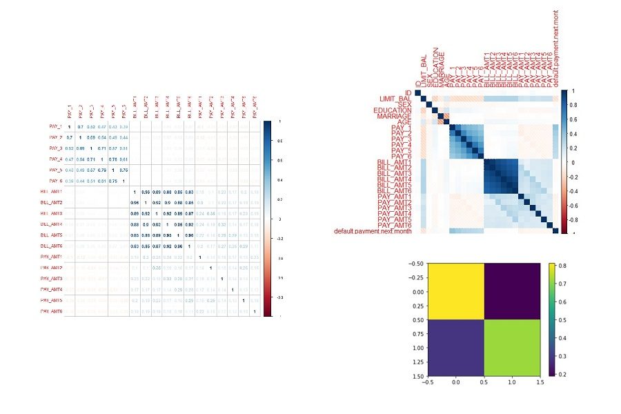
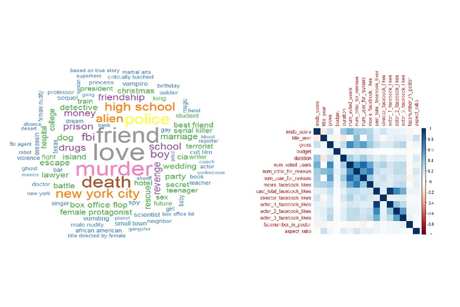

Exploration of Linear Classifiers: Predicting Repayment Status on Credit Card Dataset
Analyzed the credit card default payment issue in Taiwan from 2005 by data visualization, correlation analysis, and model building such as Logistic Regression, Support Vector Machine, and Panel Data by using R and Python
Fusce dapibus, tellus ac cursus commodo, tortor mauris, ut fermentum massa justo sit amet risus. Maecenas sed diam eget risus varius blandit sit amet non magna. Nullam quis risus eget urna mollis ornare vel eu leo. condimentum nibh, ut fermentum massa justo sit amet risus. Maecenas sed diam eget risus varius blandit sit amet non magna. Nullam quis risus eget urna mollis ornare vel eu leo.
Visit Site
5000+ Movie Dataset Analysis
We obtained 28 variables in the movie dataset from 5043 movies and 4906 posters, spanning across 100 years in 66 countries. For example, there are 2399 unique director names, and thousands of actors/actresses. Our goal is to predict the IBDB Score of a movie based on these attributes.
We first considered the linear regression model, where we conducted both variable and model selection using subset selection and stepwise method. We also utilized ridge and lasso regression to include all the variables, and we found that lasso regression performs well in our case as it forces some of the coefficients to be 0 and therefore mitigated the problem of multicollinearity and overfitting.
We then considered non-parametric approaches including principle component analyses and tree methods. With a few components, the principle regression analysis performs the worst among all the models. Partial least squares, on the other hand, significant improves over the principle regression analysis and has the training and test error comparable to the linear models.
For the tree methods, we considered regression tree, tree pruning, bagging, random forests and boosting. To our surprise, the tree methods have in general yielded more than 30% improvement over our previous models in terms of mean square of errors (MSE). This non-parametric approach beats all the regressions we conducted previously.
Visit Site 
Comparative Analysis of Natural Gas Market in the Far East: Japan vs China
Wrote commodity dissertation on natural gas market in Japan & China based on presenting an updated and thorough overview of demand/supply; performing comparative analysis of natural gas market based on statistical & historical data; providing valuable potential findings for future development
Fusce dapibus, tellus ac cursus commodo, tortor mauris, ut fermentum massa justo sit amet risus. Maecenas sed diam eget risus varius blandit sit amet non magna. Nullam quis risus eget urna mollis ornare vel eu leo. condimentum nibh, ut fermentum massa justo sit amet risus. Maecenas sed diam eget risus varius blandit sit amet non magna. Nullam quis risus eget urna mollis ornare vel eu leo.
Visit Site